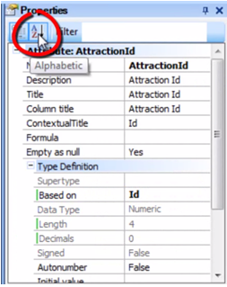
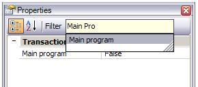

The Properties window displays the properties of the currently selected Object or Attribute, Control, Environment, etc. at any given time.
If you are positioned on an attribute, the Properties window will display the settings made for that attribute properties and will allow you to change them. Then, if you click on another part, the Properties window will be automatically refreshed showing the properties associated to the context where you are. Note that properties can be sorted alphabetically:  The properties list can be filtered using the 'Filter' text box:  You can also use this text box to quickly set a property, by typing something like MainProgram=True (GeneXus will auto-complete the name of the property and suggest valid names).
You can select multiple objects and change the properties for all of them in a single step.
|